(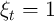) is still employed next period
(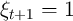), market resources will be
(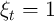) is still employed next period
(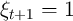), market resources will be
February 1, 2016, Christopher D. Carroll TractableBufferStock
This handout illustrates the logic of precautionary saving by assuming that individuals face only a single, simple kind of uncertainty: A small risk of becoming permanently unemployed. More realistic assumptions yield similar conclusions (after much more work).1
The aggregate wage 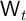 grows by a constant factor every period, reflecting exogenous labor productivity improvements:
The consumer lives in a small open economy, with a constant interest factor . Defining as market resources (net worth plus current income), as end-of-period assets after all actions have been accomplished (specifically, after the consumption decision), and as bank balances before receipt of labor income, the dynamic budget constraint (DBC) can be decomposed into the following elements:
where 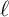 measures the consumer’s labor productivity (‘endowment’) and is a dummy variable indicating the consumer’s employment state: Everyone is either employed (state ‘e’), in which case 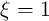, or unemployed (state ‘u’), in which case 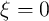, so that for unemployed individuals labor income is zero.2Once a person becomes unemployed, that person can never become employed again (i.e. if 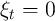 then 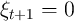). Consumers have a CRRA felicity function3 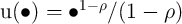, and they discount future felicity geometrically by per period.
The solution to the unemployed consumer’s optimization problem is4
where the 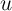 superscript signifies the consumer’s (un)employment status; 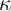 is the marginal propensity to consume for the perfect foresight consumer, which is strictly below the MPC for the problem with uncertainty (Carroll and Kimball (1996)); and is what Carroll (2011) calls the ‘return patience factor.’5We now impose the ‘return impatience condition’ (RIC),
which deserves its name because it is the condition that guarantees that 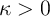 – the consumer must not be so patient that, given the interest rate, a boost to resources fails to boost spending.6 An alternative (equally correct) interpretation is that the condition guarantees that the PDV of consumption for the unemployed consumer is not infinity.7For many purposes (not least, the calibration of the model), it turns out to be useful to alternatviely express impatience conditions like (6) in terms of the upper bound of the range of time preference factors that satisfy the condition; solving (6) for , we designate this object
is the ‘return patience factor’ because it defines the patience factor relative to the return factor ; correspondingly, we define the ‘return patience rate’ as lower-case
and we say that a consumer is ‘return impatient’ if the RIC (6) holds (equivalent conditions are and 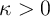).8
If a person who is employed in period (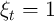) is still employed next period
(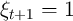), market resources will be
|
| (12) |
But employed consumers face a constant risk of becoming unemployed. It will be
convenient to define 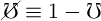 as the probability that a consumer does not become
unemployed. Whether the consumer is employed or not, his labor productivity is
well-defined:9
For convenience,  is assumed to grow by a factor 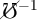 every period,
is assumed to grow by a factor 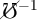 every period,
|
| (13) |
which means that for a consumer who remains employed, labor income will grow by factor
The same solution methods used in PerfForesightCRRA can be applied here too (take the first order condition with respect to , use the Envelope theorem); the only difference is the need to keep the expectations operator in place. Using as a placeholder for ‘e’ or ‘u,’ the usual steps lead to the standard consumption Euler equation:
Defining nonbold variables as the bold equivalent divided by the level of permanent labor income for an employed consumer, e.g. 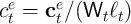, we can rewrite the consumption Euler equation as
It will be useful now to define a ‘growth patience factor’ (this terminology will be justified below):
which is the factor by which 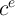 would grow in the perfect foresight version of the model with permanent income growth factor (again see PerfForesightCRRA). Using this, (20) can be written as10Now define 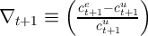 (which is the proportion by which consumption would be greater next period for an employed than for an unemployed person), and define an ‘excess prudence’ factor
Appendix A shows that, with some approximations, we can rewrite (26) as
which can be simplified in the logarithmic utility case (where ) toNow since consumption if employed is surely greater than consumption if unemployed 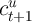, 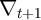 is certainly a positive number. But since 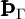 is the value that 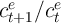 would exhibit in a perfect foresight model, this equation tells us that uncertainty boosts consumption growth11 – in the logarithmic case, consumption growth is augmented by an amount proportional to the probability of becoming unemployed multiplied by the size of the ‘consumption risk’ (the amount by which consumption would fall if unemployment occurs).
As noted above, for any given 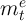, an increase in uncertainty constitutes a mean-preserving spread in human wealth; thus the ‘human wealth effect’ of an increase in would be zero for a consumer without a precautionary motive. In this small-open-economy model a change in also has no effect on the interest rate , and so none of the conventional determinants of consumption in the perfect foresight model (the income, substitution, and human wealth effects) is affected by a change in uncertainty. The increase in consumption growth from an increase in in (28) or (29) therefore must be entirely the result of the precautionary motive. Furthermore, because a profile with faster consumption growth can only exhibit the same PDV if that faster growth starts from a lower initial consumption level, we know that for any given initial value of 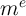, the introduction of a risk of becoming unemployed induces a (precautionary) decline in consumption (and corresponding increase in saving).
Furthermore, under the (compelling) assumption that 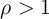, (28) implies that a consumer with a higher degree of prudence (larger 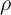 and therefore larger ) will anticipate a greater increment to consumption growth as a consequence of the introduction of uncertainty. This reflects the greater precautionary saving motive induced by a higher degree of prudence.
The target level of (if one exists) will be the point of intersection between the and loci.
The locus can be characterized by substituting 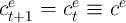 into (26):
The importance of the linearity of the consumption function of the unemployed consumer now becomes evident: It means that the RHS of (34) is linear in 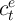:
We know that 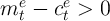 because a consumer in these
circumstances (facing possible perpetual unemployment) will never
borrow (see below for a full discussion of this point). Since the RIC
imposes  , (35) tells us that steady-state consumption (if it
exists)12
is a positive finite number so long as 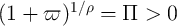, which will hold true
iff the numerator on the LHS of (32) is a positive finite number; that is, we need
the condition:
, (35) tells us that steady-state consumption (if it
exists)12
is a positive finite number so long as 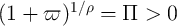, which will hold true
iff the numerator on the LHS of (32) is a positive finite number; that is, we need
the condition:
As with the RIC, it may be useful to rewrite this as defining an upper bound to the permissible time preference rates:
In the limit as approaches zero, (38) reduces to a requirement that the growth patience factor is less than one,
which, as in PerfForesightCRRA, we call a ‘growth impatience condition’ (GIC) by analogy to the ‘return impatience condition’ (6) imposed earlier. PerfForesightCRRA shows that the limit of (38) as , 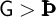, ensures that a consumer facing no uncertainty is sufficiently impatient that his wealth-to-permanent-income ratio will fall over time. We label the weaker condition (38) the ‘GIC-TBS’ (the version of the GIC required for a solution to exist in the Tractable Buffer Stock model). It will always hold if the plain-vanilla GIC holds because . Thus, a consumer who, in the absence of uncertainty, would satisfy both the RIC and the GIC, will have a positive finite target level of wealth when uncertainty is introduced. (See appendix B for a proof that the GIC condition is both necessary and sufficient for the existence of a target level of wealth.)When it is useful to distinguish the version of the GIC that applies in the model with income growth of from the corresponding condition when growth is we will label the two conditions GIC and GIC, and the corresponding bounds on are
Using , we similarly define the corresponding ‘growth impatience rate’:
so that the growth impatience condition (38) (the GIC-TBS) can also be written (approximately) as or, since ,Equation (45) becomes easier to satisfy as increases, since in both places where appears on the LHS it is with a negative coefficient.
The reason the two appearances of have not been combined in (45) is that the separate terms reflect two logically distinct effects. The first appearance, where is premultiplied by , can be interpreted as capturing the sense in which an increase in is like an increase in the discounting of the future (the coefficient on is the same as that on ). This downweighting of the future occurs precisely because that future might not occur (if the consumer becomes unemployed).13 The effect is much like the increase in discounting that occurs when a positive probability of death is introduced in consumption problems, cf. Blanchard (1985).
The second, separate, reason weakens growth impatience (that is, the GIC-TBS holds in more circumstances than the GIC) is that we adjust labor productivity growth so that in order to maintain constant human wealth for different values of (eq. (13)). For higher , permanent income growth is greater conditional on remaining employed; the continuously-employed consumer is effectively more ‘impatient’ in the relevant sense of desiring consumption growth slower than income growth.
This is essentially a mechanical result, which reflects our model’s design for the purpose of examining thought experiments that manipulate the degree of uncertainty while leaving the perfect-foresight level of human wealth constant.
Note that although is our measure of uncertainty, neither of these effects of is in any meaningful sense directly a ‘precautionary’ effect; instead, they both reflect effects of on the relevant degree of growth impatience in the GIC-TBS condition.
Appendix B demonstrates that the RIC and the GIC-TBS are necessary conditions for the existence of a target value of market resources and that the GIC is sufficient. Appendix C solves for an explicit formula for that target.
Briefly, this is accomplished as follows. We can obtain the locus by substituting into equation (35):
Now we need to use a normalized version of the DBC (equation (12)),
to derive the locus (also referred to as the locus):The steady-state levels of and are the values of these two variables at which both (51) and (47) hold. This is just a set of two linear equations and two unknowns, and with a bit of algebra can be solved explicitly.
In the special case of logarithmic utility (), the appendix shows that (under some strong assumptions) an approximation to target market resources will be given by
and that the GIC and the RIC guarantee that the denominator of the fraction is a positive number. This expression encapsulates several of the key intuitions of the model. The
‘human wealth effect’ of growth (cf. Summers (1981)) is captured by the first
term in the denominator; clearly, for any calibration for which the
denominator is a positive number, increasing will increase the size of the
denominator and therefore reduce the target level of wealth. The human wealth
effect of interest rates is correspondingly captured by the  term. An
increase in the future discounting rate, , will also increase the size of the
denominator and therefore reduce target wealth. Finally, a reduction in
unemployment risk will boost and therefore reduce target
wealth.14
term. An
increase in the future discounting rate, , will also increase the size of the
denominator and therefore reduce target wealth. Finally, a reduction in
unemployment risk will boost and therefore reduce target
wealth.14
The assumption of log utility is restrictive, and probably does not capture sufficient aversion to consumption fluctuations. Fortunately, another special case helps to illuminate the effect of higher levels of prudence. The appendix shows that, in the special case where , the target level of wealth will be approximable by
which is like (52) (with ) but with the addition of the final term involving which measures the amount by which prudence exceeds the logarithmic benchmark. An increase in reduces the denominator of (53) and thereby boosts the target level of wealth: Exactly what would be expected from an increase in the intensity of the precautionary motive.Note that the different effects interact with each other, in the sense that the strength of, say, the human wealth effect will vary depending on the values of the other parameters. The ways in which these interactions make intuitive sense will repay deep reflection. (Hint: How much I care about the future governs the power that future events have in determining my targets; use the formula to think about why).
Interestingly, the limit of the buffer stock model as is not the perfect foresight solution obtained when is exactly equal to zero. But that limiting solution contains most of the insight that comes from the more general model with bounded strictly away from zero, so we confine the analysis here to that limiting case.
The handout PerfForesightCRRA shows that in the perfect foresight context, it is necessary to impose the Finite Human Wealth Condition (henceforth, FHWC) to obtain a sensible solution.15 But if the FHWC holds, the GIC is strictly stronger than the RIC, because the combination and obviously implies . If we substitute for , we can define the corresponding version of the condition in the case where growth is : the FHWC.
It turns out that in the buffer stock model, we can relax the requirement that human wealth is finite.
We pointed out above that (38), which is necessary for the existence of a steady-state level of consumption, implies that the GIC holds in the case being considered here, the limit as . The interesting question is therefore what happens when the FHWC does not hold (that is ).
Given that the GIC holds, if the FHWC does not hold the RIC may or may not hold: implies that but could be consistent with being greater or less than one. But recall that our assumption is that the unemployed consumer is assumed to behave according to the perfect foresight model with human wealth equal to zero. We must therefore impose the RIC in order to obtain a nondegenerate solution. We therefore impose the RIC.
For any finite horizon, human wealth is finite, and there is a positive probability that income will be zero over the remainder of the horizon. This puts a strict bound on the extent to which consumers are willing to rely for current consumption upon future income that is unbounded in expectation (as the horizon extends) but potentially bounded in practice. In effect, the precautionary motive introduces a self-imposed borrowing constraint that prevents the (arbitrarily large) amount of future income from being something the consumer is willing to borrow against.
The consequence is that the limiting model (as ) exhibits a solution with a unique finite target so long as (38) holds, even if human wealth is infinite; in this case the locus is downward sloping (because ; see (51)) while the locus is upward sloping (as guaranteed by (38)). Thus, a target will exist.
Figure 1 presents the phase diagram.
The locus, given in (51), indicates, for a given level of , how much consumption would be exactly the right amount to leave unchanged. Call this the ‘permanently sustainable consumption locus,’ or for short ‘sustainable consumption.’16 For any given , consuming an amount less than the ‘sustainable’ level will cause wealth will rise (and conversely for points above ). This provides the logic for the horizontal arrows of motion in the diagram: Above the sustainable consumption locus they point left, and below they point right.
The intuition for the locus (which comes from (47)) is a bit subtler.
Take a point on the locus, and consider how things would
change if were a bit higher at the same . Recall that the growth
rate of consumption consistent with the Euler equation (26) depends on
the amount by which consumption will fall if the bad state is realized,
 . But so at the same but a
greater , will be larger. If were to remain unchanged,
then with the larger the ratio would be
smaller.
. But so at the same but a
greater , will be larger. If were to remain unchanged,
then with the larger the ratio would be
smaller.
The consequences of this are easiest to see in the logarithmic case whose consumption growth equation is derived in (29), which tells us that , which directly implies that the lower will yield a lower . That is, for any point to the right of the locus, the growth rate of consumption will be lower than at the corresonding point on the locus. Since on the locus, growth was zero, this means that to the right of the locus, is declining (hence the down arrow in the phase diagram). Reciprocally, for any point to the left of , the Euler equation implies that consumption will rise.
The next figure shows the optimal consumption function for an employed consumer (dropping the superscript to reduce clutter). This is actually just the stable arm in the phase diagram. (Think about why). Also plotted are the 45 degree line along which as well as the function
where is the level of (normalized) human wealth. is the solution to a perfect foresight problem in which income grows by the factor ; it is depicted in order to introduce a final fact: As wealth approaches infinity, the solution to the problem with uncertain labor income approaches arbitrarily close to the perfect foresight solution.17Note that is concave.18 That is, the marginal propensity to consume is higher at low levels of . This is because of the increase in the intensity of the precautionary motive as resources decline; the consequences of becoming unemployed with little wealth are very painful. The MPC is high at low levels of because at low levels of the relaxation in the intensity of the precautionary motive with each extra bit of is quite large (Kimball (1990)). This diminution in the precautionary motive translates into an increase in consumption; for -poor consumers even a modest increase in can give a substantial boost to .
This point is clearest as approaches zero. Note that the consumption function always remains below the 45 degree line. This is because if the consumer were to spend all his resources in period , , then if he became unemployed next period he would have which would induce , yielding negative infinite utility. Thus the consumer will never spend all of his resources - he will always leave at least a little bit for next period in case of disaster (unemployment).19
The next figure (‘the growth diagram’) illustrates some of the same points in a different way. It depicts the growth rate of consumption as a function of . Since , the GIC for this model implies:
a condition that can be visually verified for our benchmark calibration in figure 3. Now multiply both sides of (26) by , obtaining where the last line uses the same (dubious) approximations used to obtain (28).20Thus consumption growth is equal to what it would be in the absence of uncertainty, plus a precautionary term. Furthermore, the precautionary contribution will become arbitrarily large as because approaches zero as . Sure enough, figure 3 shows that as gets low, expected consumption growth gets very large.
Next, note that the point where the consumption growth locus meets
the income growth line is labelled  . This is because the place where
consumption growth is equal to income growth is at the target value of
.
. This is because the place where
consumption growth is equal to income growth is at the target value of
.
We are finally in position to get an intuitive understanding of how the model works, and why there is a target wealth ratio. On the one hand, consumers are growth-impatient. This prevents their wealth-to-income ratio from heading off to infinity. On the other hand, consumers have a precautionary motive that intensifies more and more as the level of wealth gets lower and lower. At some point the precautionary motive gets strong enough to counterbalance impatience. The point where impatience matches prudence defines the target wealth-to-income ratio.
Now consider the results of increasing the interest rate to , depicted in figure 4. Obviously the perfect foresight consumption growth locus will shift up, to , inducing a corresponding increase in the expected consumption growth locus. But we have not changed the expected growth rate of income. It is clear from the figure, therefore, that the new target level of cash-on-hand will be greater than the original target. That is, an increase in the interest rate increases the target level of wealth, as would be expected on intuitive grounds.
The next exercise is an increase in the risk of unemployment The principal
effect we are interested in is the upward shift in the expected consumption
growth locus to . If the household starts at the original target level of
resources , the size of the upward shift at that point is captured by the arrow
orginating at  .
.
In the absence of other consequences of the rise in , the effect on the target level of would be unambiguously positive. However, recall our adjustment to the growth rate conditional upon employment, (13); this induces the shift in the income growth locus to which has an offsetting effect on the target ratio. Under our benchmark parameter values, the target value of is higher than before the increase in risk even after accounting for the effect of higher , but in principle it is possible for the effect to dominate the direct effect. Note, however, that even if the target value of is lower, it is possible that the saving rate will be higher; this is possible because the faster rate of makes a given saving rate translate into a lower ratio of wealth to income. In any case, the most useful calibrations of the model are those for which an increase in uncertainty results in either an increase in the saving rate or an increase in the target ratio of resources to permanent income. This is partly because our intent is to use the model to illustate the general features of precautionary behavior, including the qualitative effects of an increase in the magnitude of transitory shocks, which unambiguously increase both target and saving rates.
Figures 3 and 4 show that, so long as consumers are impatient, the steady state growth rate of consumption will be equal to the steady-state growth rate of income,
Yet the approximate Euler equation for consumption growth, (57), does not contain any term explicitly involving income growth; in the logarithmic utility case, for example, the expression is
How can we reconcile these two expressions for consumption growth? Only by realizing that the size of the precautionary term is endogenous: It depends on . Indeed, we can solve (59) and (60) to determine that in steady-state we must have
We can use this equation to understand the relationship between parameters and steady-state levels of wealth, by noting that is a downward-sloping function of (see figure 3 again). This is because at low levels of current wealth, much of the spending of employed consumers is financed by their current income. If they lose that income, they will have no choice but to cut consumption drastically; this is reflected in a large value of .
For example, an increase in the growth rate of income implies that the RHS of equation (61) increases. The new target level of must be lower, because lower wealth induces greater consumption risk and a corresponding increase in the LHS of (61). This is how the human wealth effect works in this framework: Consumers who anticipate faster income growth will hold less market wealth.
The fact that consumption growth equals income growth in the steady-state poses major problems for empirical attempts to estimate the Euler equation. To see why, suppose we had a collection of countries indexed by , identical in all respects except that they have different interest rates . Then in the spirit of Hall (1988), one might be tempted to estimate an equation:
and to interpret the coefficient estimate on as an indication of the value of .But suppose that all of these countries contained impatient consumers and were in their steady-states where . Suppose further that all countries had the same steady-state income growth rate and unemployment rate.21 Then the regression equation would return the estimates
The econometric problem here is that there is an omitted variable from the regression specification, the term, which is (perfectly) correlated with the included variable . Thus, Euler equation estimation cannot be expected to return an unbiased estimate of . For much more on this problem, see Carroll (2001). For empirical evidence that the problem is important in macroeconomic practice, see Parker and Preston (2005).
We now consider a final experiment: A decrease in the time preference rate. To reduce clutter, we drop the locus from the phase diagram from Figure 1, and everywhere drop the superscripts. (In exam questions, a figure like this might be referred to as the ‘simplified consumption phase diagram’ or just ‘the consumption diagram’).
Figure 6 depicts the effect on the employed consumer’s spending by showing each successive point in time as a dot. Starting at time 0 from the steady-state level of consumption, the decrease in the future discounting rate (an increase in patience) causes an instantaneous drop in the level of consumption. Starting from this diminished base, consumption growth is subsequently faster than before the drop in .22
Eventually consumption approaches its new, higher equilibrium ratio to permanent income at a new, higher level of equilibrium . This higher level of consumption is financed in the long run by the higher interest income earned on the higher level of wealth.
Note again, however, that equilibrium steady-state consumption growth is still equal to the growth rate of income (this follows from the fact that there is a steady-state level for the ratio of consumption to income, ). This means that the higher level of wealth in equilibrium ends up being precisely enough to reduce the precautionary term by an amount that exactly offsets the fact that the term in the Euler equation is now smaller.
The final figures depict the time paths of consumption, market wealth,
and the marginal propensity to consume  following the decline
in . These are implicit in the phase diagram analysis, but the dots
in these two new diagrams are spread out evenly over time to give a
sense of the time scale over which the model adjusts toward the steady
state.
following the decline
in . These are implicit in the phase diagram analysis, but the dots
in these two new diagrams are spread out evenly over time to give a
sense of the time scale over which the model adjusts toward the steady
state.
Loosely following Carroll and Jeanne (2009) (with some simplifications), this section extends the model to analyze macroeconomic dynamics in a small open economy with a large number of individuals, where the population statistics reflect the fulfillment of individual consumers’ ex ante expectations; for example, exactly proportion of households who are employed in period become ‘unemployed’ before , so that the aggregate labor supply of the ‘active’ (still employed) members of a generation evolves according to
where the first subscript denotes the date being examined and the second denotes the period of birth of the generation being examined.We make strong assumptions that permit straightforward aggregation. The first such assumption is that newly unemployed households immediately migrate out of the country (think of British retirees moving to southern Spain).23 This means that macroeconomic variables will reflect only the circumstances of employed consumers, rather than a blend of the employed and the unemployed.
Each person is part of a single ‘generation’ of households born at the same time, and every new generation is larger by the factor than the newborn generation in the previous period:
We assume that total production by the (surviving) members of a generation grows by the factor every period. If total production is to grow despite a shrinking number of surviving members of the generation, production per active capita must grow by as per (13).
Consider the economy in some period 0 in which the size of the newborn
population and the wage rate have been normalized to . If the
economy has existed for periods (where  is a negative number,
indicating that the economy was created before period 0), the ratio of the total
population to the population of newborns will be
is a negative number,
indicating that the economy was created before period 0), the ratio of the total
population to the population of newborns will be
Relative to the labor income of period 0’s newborn cohort (), the total labor income in period 0 of the generation born in period is ; the sum of the incomes of all of the two-period-old individuals is , and so on; total labor income for all generations in the economy in period 0 is
which is finite so long as either population growth is positive (which we will assume) or the economy has existed for a finite period of time (). In either case, the proportion of aggregate income accounted for by a generation born at any specific moment declines toward zero as time passes (old generations never die, they just fade away).In the balanced growth equilibrium, the growth factor for aggregate population will therefore be and output per capita will increase by per period. Total labor income therefore grows by
We now examine this model under two assumptions about the initial ‘stake’ of newborns in the economy. (We use ‘stake’ to designate a transfer received by newborns). This is explicitly not an inheritance, as we have assumed that individuals have no bequest motive and newborns are unrelated to anyone in the existing population. Our motivation is to make the model more tractable, rather than to represent an important feature of the real world; we later perform simulations designed to show that the characteristics of the model with no ‘stake’ are qualitatively and quantitatively similar to those of the more tractable model with the ‘stake’ that makes the model tractable.
We first consider a version of the model in which an exogenous redistribution program guarantees that the behavior of employed households can be understood by analyzing the actions of a “representative employed agent.”
If a benevolent source outside the economy were to provide every newborn with an initial transfer upon birth of size , then the newborn’s total monetary resources would be
Thus, per-capita market resources for members of the newborn generation would be exactly equal to the target level of market resources for a person anticipating the future path of labor income that the members of the newborn generation actually anticipate (which is the same as the future path anticipated by all other generations as well).
If such a transfer policy had been in place forever, the economy at every point in time would consist of employed households whose consumption had been equal to its steady-state value for their whole lives. That is, every individual agent in this economy would be identical in their ratio of consumption, market resources, etc. to permanent labor income. The behavior of any individual would therefore be fully captured by the behavior of a representative employed agent.24
The foregoing scenario assumed that the ‘stake’ is provided by a mysterious ‘benevolent source outside the economy.’ Fortunately, there is an easy way to eliminate this problematic assumption: Assume that the stakes are financed by a wage tax.
The size of the required tax rate is calculated as follows. The total size of the resources transferred to the newborn generation must be
where is the after-tax wage rate for the economy as a whole (and is the steady state target ratio of bank balances to after-tax wages).From (68), the ratio of total aggregate labor income to the labor income of the newborn generation is
so the aggregate wage tax rate required to finance a ‘stake’ of size for newborns is given byNote, however, that in an economy where this tax has existed forever, the consequence of the tax is effectively just a permanent reduction in after-tax labor income by proportion , compared to its value in the absence of the tax. Given the homotheticity of the model, a permanent rescaling by a constant factor leaves the scaled version of the individual’s problem (and its solution) unchanged. Thus we can conclude not only that a representative agent exists in this economy, but that the steady-state characteristics of the representative agent’s problem are identical (in ratio form) to the characteristics of the unrescaled individual’s problem; that is, , , and so on.
Matters are not much more complicated outside the balanced growth steady
state, so long as we assume that the government always transfers the amount
to newborn households, financed by the tax derived above. Consider, for
example, an economy that was in steady-state equilibrium leading up to period
, and at the beginning of there is a sudden realization that future growth
rates will be higher than those anticipated and experienced in the past:
after . Since expected growth rates affect , the tax rate must be
immediately and permanently changed so that the generations born after
receive a ‘stake’ of the proper new size. This change in has two consequences
for the generations that survive from periods prior to . Under the old tax
rate, they would have experienced ; the change in
expectations has no effect on  or but changes the tax rate to . Thus
these households will have an actual resource ratio that differs from its
new target value, , both because the after-tax income scaling
factor has changed and because the target ratio has changed from to
.
or but changes the tax rate to . Thus
these households will have an actual resource ratio that differs from its
new target value, , both because the after-tax income scaling
factor has changed and because the target ratio has changed from to
.
However, if we started out in steady-state, the ratio problem of every member of the continuing-employed population is identical to that of every other such household (though, again, their masses differ depending on age, etc); as a result, the dynamics of the economy are fully captured by keeping track of the relative weights in the economy of the (gradually diminishing) ‘representative shocked agent’ and the (gradually increasing) ‘representative new agent’ whose behavior is locked at its steady-state value.25
Figure 10 illustrates the dynamics in this economy using an experiment identical to one explored above for the individual’s problem: In period 0 there is a one-off decline in the future discounting rate (assuming the economy was in steady state before period 0). In the previous model, each individual consumer’s consumption function shifted down, and consumption experienced a discrete jump downward, because the agent became more impatient. Here, there is a modest further effect: With more-patient consumers, the tax rate that the government sets to finance a transfer of to the newborns must be larger (so that the ratio of initial assets to after-tax income is smaller). Qualitatively, the dynamics are indistinguishable from the individual consumer’s dynamics obtainable without working through the extra complication involved in accounting for the ‘stakes.’
The polar alternative to assuming that newborns get a ‘stake’ is to assume that newborns enter the economy with zero assets. Analysis of this version of the model must be performed using simulation methods, because households of different ages will have different levels of assets. (With a concave and nonanalytical consumption function, analytical aggregation cannot be performed.)
Our simulation procedure assumes that at date 0 the economy has existed forever (so that the age distribution of relative populations and productivities are at their steady-state values), but saving has been impossible prior to period 0.26 With everyone’s , the ratio of market resources to permanent labor income is the same for all individuals:
The consumption ratio in period 0 is therefore for every household (regardless of age), while the level of total labor income for a generation that is periods old is .27 The population of such workers is , so aggregate consumption will be given by the per-capita consumption ratio, multiplied by the per-capita level of permanent income, multiplied by the population of workers still alive:The longer a generation lives, the more time it will have had to save toward its target level of wealth; but newborns always begin life with no assets. After period 0, therefore, age-heterogeneity in assets and consumption ratios creeps into the population.
The foregoing discussion contains (in some cases implicitly) all the assumptions necessary to conduct a simulation of this economy. Figure 11 shows the path of the ratio starting from period 0 for an economy under our benchmark parameterization that generated our earlier figures. The only extra parameter required beyond those used before is ; we choose corresponding roughly to the postwar population growth rate in the United States.
Using from MathFacts the second-order and then the first-order Taylor approximations and then , the expression in braces in (26) can be rewritten
![{ [ ( ) ρ ] }1 ∕ρ { [( ) ρ ] }1 ∕ρ
cet+1 cut+1 + cet+1 - cut+1
1 + ℧ -u--- - 1 = 1 + ℧ --------u----------- - 1
ct+1 ct+1
ρ 1∕ρ
= {1 + ℧ [(1 + ∇t+1 ) - 1]}
{ [ 2 ]}1 ∕ρ
≈ 1 + ℧ 1 + ρ ∇t+1 + ρ (∇t+1 ) ω - 1
{ 2 }1∕ρ
= 1 + ρ℧ (∇t+1 + (∇t+1 ) ω )
≈ 1 + ℧ (1 + ∇ ω )∇ ,
t+1 t+1](TractableBufferStock396x.png)
At a steady-state value of , both and hold (equations (47) and (51)); for convenience defining ,
But since is a positive number, at the locus’s value is while the value of the locus is zero, the two loci can intersect for a positive only if the slope of the locus is greater:28 which is equivalent to where the LHS is (proportional to) the slope of and the RHS is (proportional to) the slope of . For any fixed and and  we can find some for which
, and using this it turns out to be useful to rewrite
we can find some for which
, and using this it turns out to be useful to rewrite
Note for future use that (86) implies that whenever , the FHWC fails (‘human wealth is infinite’) because .
Multiplying both sides of (80) by then substituting the expression for from (86) gives
Since and (as guaranteed by the RIC), (88) is satisfied whenever the FHWC fails () and . We now show that under these conditions, .
from (32) is:

 , must also be 1, implying that
(the RIC) so that and so and hence
. The other interesting case is when
, must also be 1, implying that
(the RIC) so that and so and hence
. The other interesting case is when  so that and
. In this case and so
and so is even more positive so that is even more
strongly . Similar logic holds for any .
so that and
. In this case and so
and so is even more positive so that is even more
strongly . Similar logic holds for any .
Thus, we can conclude that, when human wealth is infinite (that is, if ), a target will exist.
In the case where human wealth is finite (), we need the RHS of (88) not merely to be positive, but to exceed a specific positive number, :
and the boundary will be the point at which this expression holds with equality.An increase in impatience caused by an increase in the pure time preference rate (equivalently, a reduction in ) has the effect of reducing growth-patience (the LHS of (97)) and of increasing the RHS. This means that there will be some time preference rate sufficiently large (some sufficiently small) to guarantee that the condition holds with equality. Then (97) will always be satisfied by any satisfying
Since we have assumed the RIC (so that ), as or , (97) asymptotes to the GIC for any given value of .
The apparently harder case is when and . But note that we will have found if we can find the corresponding at which the first term in reaches 1:
Somewhat miraculously, at this value of , because , (97) holds with equality, which means that . This means that the GIC defines the definitive boundary condition: A finite target exists so long as
We have just demonstrated that satisfying the GIC condition is necessary and sufficient to guarantee existence of a target . But we suggested earlier that a weaker condition, the GIC-TBS, guarantees the existence of a well-defined consumption function.
This can be understood as follows. Rewrite the requirement for existence of a target, (80), as
or taking logs we have approximately The LHS captures the slope of the locus, which is modified
by whose difference from captures the degree of growth
(im)patience.29
The RHS captures the slope of the locus. Recall that the inequality
captures the fact that a target  exists if these two loci intercept, which
happens if the slope of exceeds that of .
exists if these two loci intercept, which
happens if the slope of exceeds that of .
If the consumer is ‘growth patience poised’ (that is, ), then and the slope of the locus is identical to the that characterizes the perfect foresight consumption function. In this case (107) becomes
which is the (log version of) the GIC. The condition cannot hold both as an equality (our starting assumption) and an inequality (the conclusion of (109)). This contradiction constitutes a proof that exactly at a target does not exist.As noted above, if the consumer is growth-impatient () then and the slope of is monotonically increased as the degree of growth-impatience increases (so that target is diminished).
But if the consumer is growth-patient () then and
the slope of is diminished (which reflects the fact that the
greater the degree of patience, the lower will consumption be for any given
).30
The lower bound is defined by the point at which the degree of growth patience
becomes so strong that the slope of reaches zero (when ;
equivalently, reaches -1). This restricts the permissible degree of growth
patience, because  requires (rewrite (38)):
requires (rewrite (38)):
Expanding on a discussion in the main text, the numerator in the leftmost
expression reflects the sense in which the unemployment risk acts in a manner
similar to the effect of an extra degree of discounting (reflecting the fact that
the relevant condition applies only so long as the consumer remains in
employment – a condition whose probability is ), while the
denominator reflects the mechanical effect in which the relevant measure
of growth is boosted by the adjustment that preserves human wealth.
Writing the perfect foresight version of the growth patience factor as
(which is just the limit as ), we can see that the expression on the
LHS is just which is smaller than because  and . So, the GIC-TBS holds whenever the plain-vanilla
GIC holds, but not vice-versa; there are parametric configurations in which
a perfect-foresight consumer with income growth rate would not
satisfy the relevant GIC (so, their wealth-to-income ratio would go to
infinity), but the same consumer faced the same human wealth but with
an unemployment risk would have a finite target wealth-to-income
ratio.
and . So, the GIC-TBS holds whenever the plain-vanilla
GIC holds, but not vice-versa; there are parametric configurations in which
a perfect-foresight consumer with income growth rate would not
satisfy the relevant GIC (so, their wealth-to-income ratio would go to
infinity), but the same consumer faced the same human wealth but with
an unemployment risk would have a finite target wealth-to-income
ratio.
The easiest way to understand all of this is graphically. A notebook
Carroll (Ongoing) (see references for details) in the code archive associated
with these lecture notes shows how this works for alternative values of

To simplify the expressions in the derivations below, we define so that and we drop the superscripts, allowing (47) to be rewritten as
If a target value exists it will be at the point of intersection between the and the loci:
A first point about this formula is suggested by the fact that
which is likely to increase as approaches zero.31 Note that the limit as is infinity, which implies that .
This is precisely what would be expected from this model in which consumers
are impatient but self-constrained to have
is infinity, which implies that .
This is precisely what would be expected from this model in which consumers
are impatient but self-constrained to have  : As the risk gets
infinitesimally small, the amount by which target exceeds its minimum
possible value shrinks to zero.
: As the risk gets
infinitesimally small, the amount by which target exceeds its minimum
possible value shrinks to zero.
We now show that the RIC and GIC ensure that the denominator of the fraction in (120) is positive:

However, note that also affects ; thus, the first inequality above does
not necessarily imply that the denominator is decreasing as moves from  to .
to .
Now defining
under certain conditions we can obtain further insight into (120) using a judicious mix of first- and second-order Taylor expansions (along with ):32But
which is guaranteed to be positive by the GIC, but which can take any value in the interval . Note, however, that the approximations above are valid only if is ‘small’ which requires that the degree of growth
impatience be small relative to the size of the unemployment risk. Thus, the
formulae derived above (and used below) are reliable only in rather special
circumstances, in particular when the consumer is only very slightly
growth-impatient.33
Under these circumstances, this approximation can be substituted into (125) to
obtain and
inspired by Kimball (1990) defining a term related to the excess of prudence
over the logarithmic case, (120) can be approximated by where negative signs have been preserved in front of the and terms as a
reminder that the GIC and the RIC imply these terms are themselves negative
(so that and are positive). Ceteris paribus, an increase in relative
risk aversion will increase and thereby decrease the denominator of (133).
This suggests that greater risk aversion will result in a larger target level of
wealth.34
is ‘small’ which requires that the degree of growth
impatience be small relative to the size of the unemployment risk. Thus, the
formulae derived above (and used below) are reliable only in rather special
circumstances, in particular when the consumer is only very slightly
growth-impatient.33
Under these circumstances, this approximation can be substituted into (125) to
obtain and
inspired by Kimball (1990) defining a term related to the excess of prudence
over the logarithmic case, (120) can be approximated by where negative signs have been preserved in front of the and terms as a
reminder that the GIC and the RIC imply these terms are themselves negative
(so that and are positive). Ceteris paribus, an increase in relative
risk aversion will increase and thereby decrease the denominator of (133).
This suggests that greater risk aversion will result in a larger target level of
wealth.34
The formula also provides insight about how the human wealth effect works in equilibrium. All else equal, the human wealth effect is captured by the term in the denominator of (133), and it is obvious that a larger value of will result in a smaller target value for . But it is also clear that the size of the human wealth effect will depend on the magnitude of the patience and prudence contributions to the denominator, and that those terms can easily dominate the human wealth effect. This reduction in the human wealth effect is interesting because practitioners have known at least since Summers (1981) that the human wealth effect is implausibly large in the perfect foresight model.
For (133) to make sense, we need the denominator of the fraction to be a positive number; defining
this means that we need: But since the RIC guarantees and the GIC guarantees (which, in turn, guarantees ), this condition must hold.35The same set of derivations imply that we can replace the denominator in (133) with the negative of the RHS of (139), yielding a more compact expression for the target level of resources,
This formula makes plain the fact that an increase in either form of impatience, by increasing the denominator of the fraction in (141), will reduce the target level of assets.We are now in position to discuss (133), understanding that the impatience conditions guarantee that its denominator is a positive number.
Two specializations of the formula are particularly useful. The first is the case where (logarithmic utility). In this case
and the approximation becomes which neatly captures the effect of an increase in human wealth (via either increased or reduced ), the effect of increased impatience , or the effect of a reduction in unemployment risk in reducing target wealth.The other useful case to consider is where but . In this case, we have
so that where the additional term involving in this equation captures the fact that an increase in the prudence term shrinks the denominator and thereby boosts the target level of wealth.36
To solve the model by the method of reverse shooting,37 we need as a function of . Starting with (25):
Inverting (48), the reverse shooting equation for is
The reverse shooting approximation will be more accurate if we use it to obtain estimates of the marginal propensity to consume as well. These are obtained by differentiating the consumption Euler equation with respect to :
so that defining, e.g., we have At the target level of we have so that yielding from (157) a quadratic equation in : which has one solution for in the interval , which is the MPC at target wealth.38The limiting MPC as consumption approaches zero, will also be useful; this is obtained by noting that utility in the employed state next year becomes asymptotically irrelevant as approaches zero, so that

Finally, it will be useful to have an estimate of the curvature (second derivative) of the consumption function. This can be obtained by a procedure analogous to the one used to obtain the MPC: differentiate the differentiated Euler equation (155) again. Noting that we can obtain:
so that which can be further simplified at the target because so thatAnother differentiation of (162) similarly allows the construction of a formula for the value of at the target ; in principle, any number of derivatives can be constructed in this manner.39
Reverse shooting requires us to solve separately for an approximation to the consumption function above the steady state and another approximation below the steady state. Using the approximate steady-state and obtained above, we begin by picking a very small number for and then creating a Taylor approximation to the consumption function near the steady state:
and then iterate the reverse-shooting equations until we reach some period in which escapes some pre-specified interval (where the natural value for is 1 because this is the that would be owned by a consumer who had saved nothing in the prior period and therefore is below any feasible value of that could be realized by an optimizing consumer). This generates a sequence of points all of which are on the consumption function. A parallel procedure (substituting for in (165) and where appropriate in (166)) generates the sequence of points for the approximation below the steady state. Taken together with the already-derived characterization of the function at the target level of wealth, these points constitute the basis for a piecewise second-order interpolating approximation to the consumption function on the interval .As a preliminary, note that since , value for an unemployed consumer is

From this we can see that value for the normalized problem is similarly:
Turning to the problem of the employed consumer, we have
and at the target level of market resources this will be unchanging for a consumer who remains employed so that
Given these facts, our recursion for generating a sequence of points on the consumption function can be used at the same time to generate corresponding points on the value function from
with the first iteration point generated by numerical integration from
With the above results in hand, the model is solved and the various functions constructed as follows. Define as a vector of points that characterizes a particular situation that an optimizing employed household might be in at any given point in time. Using the backwards-shooting functions derived above, for any point we can construct the sequence of points that must have led up to it: and and so on. And using the approximations near the steady state like (166), we can construct a vector-valued function that generates, e.g., .
Now define an operator as follows: applied to some starting point uses the backwards dynamic equations defined above to produce a vector of points consistent with the model until the that is produced goes outside of the pre-defined bounds for solving the problem.
We can merge the points below the steady state with the steady state with the points above the steady state to produce . These points can then be used to generate appropriate interpolating approximations to the consumption function and other desired functions.
Designate, e.g., the vector of points on the consumption function generated in this manner by , so that
where is the number of points that have been generated by the merger of the backward shooting points described above.The object (177) is not an arbitrary example; it reflects a set of values that uniquely define a fourth order piecewise polynomial spline such that at every point in the set the polynomial matches the level and first derivative included in the list. Standard numerical mathematics software can produce the interpolating function with this input; for example, the syntax in Mathematica is simply
which creates a function that is a interpolating polynomial connecting these points.The reverse shooting algorithm terminates at some finite maximum point , but for completeness it is useful to have an approximation to the consumption function that is reasonably well behaved for any no matter how large.40
Since we know that the consumption function in the presence of uncertainty asymptotes to the perfect foresight function, we adopt the following approach. Defining the level of precautionary saving as41
we know (see the discussion below in appendix section G) thatDefining , a convenient functional form to postulate for the propensity to precautionary-save is
with derivatives
Evaluated at (for which and its derivatives will have numerical values assigned by the reverse-shooting solution method described above), this is a system of four equations in four unknowns and, though nonlinear, can be easily solved for values of the and coefficients that match the level and first three derivatives of the “true” function.42
The text asserts that if the consumption function for a finite-horizon employed consumer approaches the function that is optimal for a perfect-foresight consumer with the same horizon,
This proposition can be proven by careful analysis of the consumption Euler equation, noting that as approaches infinity the proportion of consumption will be financed out of (uncertain) labor income approaches zero, and that the magnitude of the precautionary effect is proportional to the square of the proportion of such consumption financed out of uncertain labor income.
A footnote also claims that for employed consumers, approaches a different, but still well-defined, limit even if , so long as the impatience condition holds.
It turns out that the limit in question is the one defined by the solution to a perfect foresight problem with liquidity constraints. A semi-analytical solution does exist in this case, but it requires formidable notation and analysis to present and understand, so the details are not presented here. A continuous-time treatement can be found in Park (2006).
BLANCHARD, OLIVIER J. (1985): “Debt, Deficits, and Finite Horizons,” Journal of Political Economy, 93(2), 223–247.
CARROLL, CHRISTOPHER (2011): “Theoretical Foundations of Buffer Stock Saving,” Manuscript, Department of Economics, Johns Hopkins University, http://econ.jhu.edu/people/ccarroll/papers/BufferStockTheory.
CARROLL, CHRISTOPHER D. (1992): “The Buffer-Stock Theory of Saving: Some Macroeconomic Evidence,” Brookings Papers on Economic Activity, 1992(2), 61–156, http://econ.jhu.edu/people/ccarroll/BufferStockBPEA.pdf.
__________ (1997): “Buffer Stock Saving and the Life Cycle/Permanent Income Hypothesis,” Quarterly Journal of Economics, CXII(1), 1–56, http://econ.jhu.edu/people/ccarroll/BSLCPIH.zip.
__________ (2001): “Death to the Log-Linearized Consumption Euler Equation! (And Very Poor Health to the Second-Order Approximation),” Advances in Macroeconomics, 1(1), Article 6, http://econ.jhu.edu/people/ccarroll/death.pdf.
__________ (Ongoing): “Mathematica Notebook Illustrating Target Wealth In Cases Where FHWC-TBS and GIC-TBS Fail,” ./Code/Mathematica/Examples/ManipulateParameters/When-FHWC-Holds.nb, Download archive and open Mathematica notebook.
CARROLL, CHRISTOPHER D., AND OLIVIER JEANNE (2009): “A Tractable Model of Precautionary Reserves, Net Foreign Assets, or Sovereign Wealth Funds,” NBER Working Paper Number 15228, http://econ.jhu.edu/people/ccarroll/papers/cjSOE.
CARROLL, CHRISTOPHER D., AND MILES S. KIMBALL (1996): “On the Concavity of the Consumption Function,” Econometrica, 64(4), 981–992, http://econ.jhu.edu/people/ccarroll/concavity.pdf.
__________ (2007): “Precautionary Saving and Precautionary Wealth,” Palgrave Dictionary of Economics and Finance, 2nd Ed., http://econ.jhu.edu/people/ccarroll/PalgravePrecautionary.pdf.
FRIEDMAN, MILTON A. (1957): A Theory of the Consumption Function. Princeton University Press.
HALL, ROBERT E. (1988): “Intertemporal Substitution in Consumption,” Journal of Political Economy, XCVI, 339–357, Available at http://www.stanford.edu/~rehall/Intertemporal-JPE-April-1988.pdf.
JUDD, KENNETH L. (1998): Numerical Methods in Economics. The MIT Press, Cambridge, Massachusetts.
KIMBALL, MILES S. (1990): “Precautionary Saving in the Small and in the Large,” Econometrica, 58, 53–73.
PARK, MYUNG-HO (2006): “An Analytical Solution to the Inverse Consumption Function with Liquidity Constraints,” Economics Letters, 92, 389–394.
PARKER, JONATHAN A., AND BRUCE PRESTON (2005): “Precautionary Saving and Consumption Fluctuations,” American Economic Review, 95(4), 1119–1143.
SUMMERS, LAWRENCE H. (1981): “Capital Taxation and Accumulation in a Life Cycle Growth Model,” American Economic Review, 71(4), 533–544, http://www.jstor.org/stable/1806179.
TOCHE, PATRICK (2005): “A Tractable Model of Precautionary Saving in Continuous Time,” Economics Letters, 87(2), 267–272, http://ideas.repec.org/a/eee/ecolet/v87y2005i2p267-272.html.
![[ ]
( ∙ ) - ρ
ct+1Wt+1--ℓt+1-
1 = Rβ Et ceW ℓ (17)
[ t t t]
( ∙ ) - ρ
= Rβ E ct+1-Γ (18)
t ce
[ t ]
( ∙ ) - ρ
= Γ - ρRβ E ct+1-- (19)
t ce
{ t }
( ce ) - ρ ( cu ) - ρ
= Γ - ρRβ (1 - ℧ ) -t+1- + ℧ --t+1- . (20)
cet cet](TractableBufferStock62x.png)
![{ }
( e ) - ρ [( u ) ( e ) ] - ρ
о ρ ct+1- ct+1- -ct--
1 = оо Γ ce (1 - ℧ ) + ℧ ce ce (23)
t { [ t ]} t+1
( e ) - ρ ( u ) - ρ
= ооо ρ ct+1- 1 + ℧ ct+1- - 1 (24)
Γ ce ce
( ) { t [ ( ) ]t+}1
ce ρ ρ ce ρ
-t+e1- = ооо Γ 1 + ℧ -tu+1- - 1 (25)
ct ct+1
( e ) { [ ( e ) ρ ] }1 ∕ρ
ct+1- ct+1-
e = ооо Γ 1 + ℧ u - 1 . (26)
ct ct+1](TractableBufferStock67x.png)
![{ [ ( e ) ρ ] }
1 = 1 + ℧ ct+1- - 1 ооо ρ (30)
cu Γ
t+(1 e ) ρ
- ρ -ct--
ооо Γ = (1 - ℧ ) + ℧ u (31)
ct+1
( - ρ )1 ∕ρ ( e )
оооΓ-----1-+--℧-- = -c-t- (32)
℧ cu
◟ --------◝◜ --------◞ t+1
≡Π
( ≡ϖ ) 1∕ρ
◜------◞◟------◝ ( ce )
( ℧ - 1(ооо - ρ - 1)+1 ) = ---t- (33)
Γ cut+1
◟-----------◝ ◜-----------◞
1∕ρ
Π= (1+ϖ )
cet = cut+1Π. (34)](TractableBufferStock94x.png)


![( ) { [( ) ρ ]}1 ∕ρ
cet+1 1∕ρ cet+1
--e-- = (Rβ ) 1 + ℧ --u-- - 1 (57)
ct c t+1
Δ log ce ≈ ρ- 1(r - ϑ ) + ℧ ∇ , (58)
t+1 t+1](TractableBufferStock263x.png)


 Before and After Decline
Before and After Decline


![1∕ρ
κ(1 + ϖ ) > (α - 1 )℧ ∕(1 - ℧ ) (91)
( (α - 1)℧ )
(1 + ϖ )1∕ρ > ----------- (92)
κ (1 - ℧ )
( ) ρ
(1 + ϖ ) > (α-----1)℧- (93)
κ (1 - ℧ )
( ) ρ
- ρ - 1 (α-----1)℧-
(ооо Γ - 1 )℧ = ϖ > - 1 (94)
κ[((1 - ℧ ) ) ]
- ρ (α - 1 )℧ ρ
(ооо Γ - 1) > ℧ ----------- - 1 (95)
κ (1 - ℧ )
[ ( (α - 1)℧ ) ρ ]
ооо - ρ > 1 + ℧ ----------- - 1 (96)
Γ κ (1 - ℧ )
( ) - 1∕ρ
|| [( ) ]||
{ (α - 1 )℧ ρ }
ооо Γ < 1 + ℧ ----------- - 1 (97)
|| κ (1 - ℧ ) ||
( ◟---------◝ ◜---------◞)
≡ χ](TractableBufferStock455x.png)

![( ) ρ
----(α----1)℧------
о = 1 (99)
( (1 - ооR ) (1 - ℧ ) )
(α - 1)℧
------------------- = 1 (100 )
(1 - оооR( )(1 - ℧ ) )
(α - 1)℧
----------- = 1 - оооR (101 )
(1 - ℧ )
( )
1 - (α----1)℧-- = ооо (102 )
(1 - ℧ ) R
[ ( ) ]
(α-----1)℧- 1∕ρ
1 - (1 - ℧ ) = (Rβ ) ∕R (103 )
[ ( ) ] ρ
ρ (α----1-)℧-
R 1 - = (Rβ ) (104 )
[ ( (1 - ℧ ) ) ]
(α - 1 )℧ ρ
R ρ- 1 1 - ----------- = ЏβFHW. (105 )
(1 - ℧ )](TractableBufferStock471x.png)


![( e ) { [ ( e ) ρ ] }1 ∕ρ
ct+1- - 1 1∕ρ ct+1-
ce = Γ (R β) 1 + ℧ cu - 1 (150 )
t ( t+1 )
e | cet+1 |
ct = ( --------------{--------[(----------)-ρ-----]}1-∕ρ) (151 )
Γ - 1(Rβ )1∕ρ 1 + ℧ ---cet+1---- - 1
κ(met+1- 1)
{ [ ( e ) ρ ] } - 1∕ρ
- 1∕ρ e -----ct+1-----
= Γ (Rβ ) c t+1 1 + ℧ κ (me - 1) - 1 .(152 )
t+1](TractableBufferStock604x.png)
![e e ′′ e ′′ ∙ ∙
κ t = (1 - κt) ℶR--(1∕u--(ct))-Et-[u-(c-t+1-)κt+1 ] (156 )
◟ ◝◜ ◞
≡♮t+1
(1 + ♮t+1)κet = ♮t+1 (157 )
( )
e --♮t+1---
κ t = 1 + ♮ . (158 )
t+1](TractableBufferStock610x.png)
![e 2 ′′′ e e′ ′′ e
(κκκ t) u {(ct) + κκκ t u (ct) = ( ) }
ℶR (- κκκe ′) E [u ′′(c∙ )κκκ ∙ ] + R (1 - κκκe )2 E [(κκκ∙ )2u′′′(c∙ )] + /℧/u ′′(ce )κκ�
t t t+1 t+1 t t t+1 t+1 t+1 t+1
(162 )](TractableBufferStock624x.png)
![( ( ) )
ℶR2 (1 - κκκe )2 E [(κκκ ∙ )2u′′′(c∙ ) ] + /℧u ′′(ce )κκκe′ - (κκκe )2u′′′(ce)
κκκe′ = -------------t-----t----t+1--------t+1-----/------t+1---t+1--------t-------t-
t u′′(cet) + ℶR Et[u′′(c∙t+1)κκκ ∙t+1 ]
(163 )](TractableBufferStock625x.png)